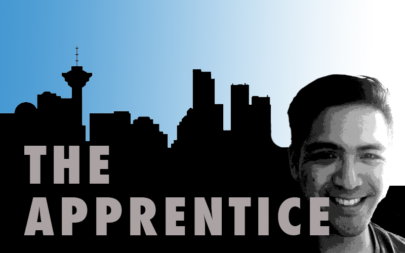
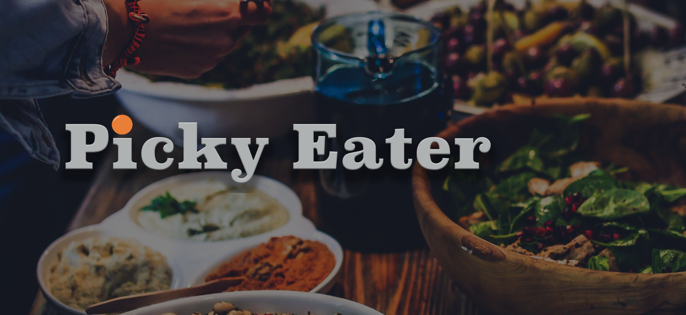
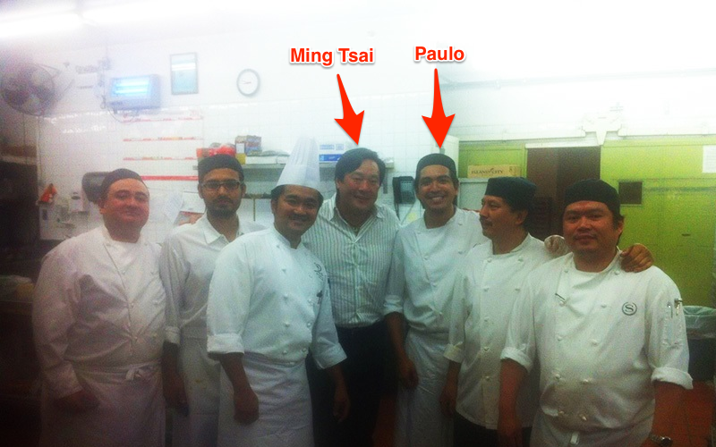
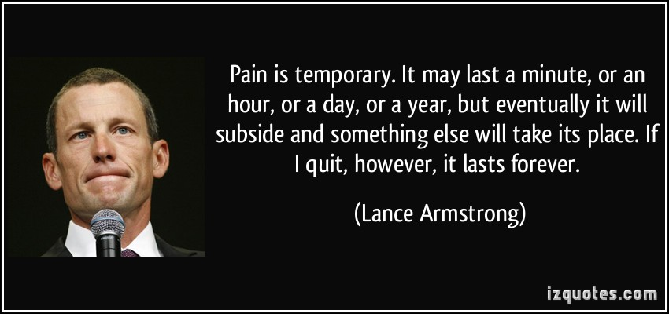

The apprentice
 The Apprentice
We aspire to do the best we can at Brewhouse – whether that’s developing code for our clients, brewing up the best cup of joe or throwing an epic party and things don’t change as we hire our very first apprentice.
But Paulo is no regular apprentice. Yes, he’s a bit green when it comes to writing code but when we delve into his resume we see he has mastered so many other skills that there is no doubt in our minds that this student will one day become the teacher.
Let’s learn a little about Paulo.
Q: Welcome, Paulo! Let’s start with learning a little bit about your educational background. A: Thanks! I have a bachelor’s degree in Hospitality Management, with a major in Culinary and I’m also a graduate of CodeCore Ruby on Rails Bootcamp.
Q: Nice. Now describe your career path. How did you end up here? A: When I was in highschool, I wanted to take computer programming but I knew that I was coming to Canada so I took culinary instead because I knew it would be easier to find jobs as a cook rather than a developer. After working in the culinary industry for a couple of years I was able to save up enough to go back to school, bit by bit, so I enrolled in a part-time introduction to programming so I could pursue my dream to be a software developer. I did get bored though with usual college-style teaching of programming so I went to CodeCore for a challenge. I do love to cook but that will never be my profession anymore – I love coding too much.
Q: We’re glad you did! What single project or task would you consider your most significant career accomplishment to date? A: While working as a cook, I had an idea for an app, which I used as my final project at CodeCore bootcamp. ‘Picky Eater’ is a menu filtering app where the menu arranges itself according to the diet or allergies of the user. I consider it my most significant accomplishment so far because I never thought it was possible at that time. It wasn’t much and the code was really hard to maintain because it was rushed but I did learn a lot and I still plan on continuing the app in the future.

Q: Looks like a great idea! Everyone seems to have food allergies these days. So what appealed to you about Brewhouse? Why did you want to apprentice here? A: I first heard of Brewhouse from Gabe, who is a Teacher’s Assistant at CodeCore. I heard about where Gabe worked and searched for it on Google. Since I was new to the tech scene, I had no idea about startups, incubators or what Brewhouse did until I had an interview with one of Brewhouse’s clients. In my interview, I was asked to show them where the files were, how to go about debugging one of the problems that they found and to my surprise, it was really easy to find where everything was. I believe I even told Gabe that the code was ‘sexy’ (And I meant it. I think it’s sexy because it was easy to understand and refactored beautifully) and asked him if Brewhouse was hiring because I would love to learn from the people who built that app.
As a freelance developer, I work alone and I always think that my code is good enough because I have no other code to compare it to. I wanted to know how to work with other developers and at the same time I wanted someone to scrutinize the code that I write so I can improve myself as a web developer.
Q: You’ve come to the right place! What do you consider one of your greatest accomplishments? A: I cooked for Ming Tsai. Not a lot of people have had the pleasure of cooking for a celebrity chef.

Q: We can’t wait for you to cook for Brewhouse! :) In fact, I think it’s a part of your training here…ya. So besides coding and cooking, do you have any other talents/hobbies? A: I like to draw portraits.

Q: Wow! You certainly do. Your talents are deep! What’s your favourite twitter handle to follow. And why? A: @philo_quotes! I love reading about philosophies. Probably because my sister gave me a philosophy book back in highschool and I really enjoyed reading that book. The book is called Sophie’s World by Jostein Gaarder
Q: I’ll have to check that out. How would your friends describe you in one word. A: BATMAN! And that is because I am a big Batman fan. Yes, he is the coolest superhero because he is one of the few superheroes that doesn’t have a superpower. (Yes, I am a geek!)
Q: And Superman fans everywhere pump their fists, “We’ll see about that March, 2016!” Speaking of quotes, what’s your favourite?  A: I am a motivational junkie. I love watching motivational videos on youtube and this particular one really struck me because this summarizes what I have been through in the past couple of months.
Paulo will apprentice at Brewhouse for the next three months to take steps in pursuing his dream of becoming a software developer.
If you would like to ask Paulo what’s it’s like to work at Brewhouse or to elaborate on why he likes Batman better than Superman, comment below.